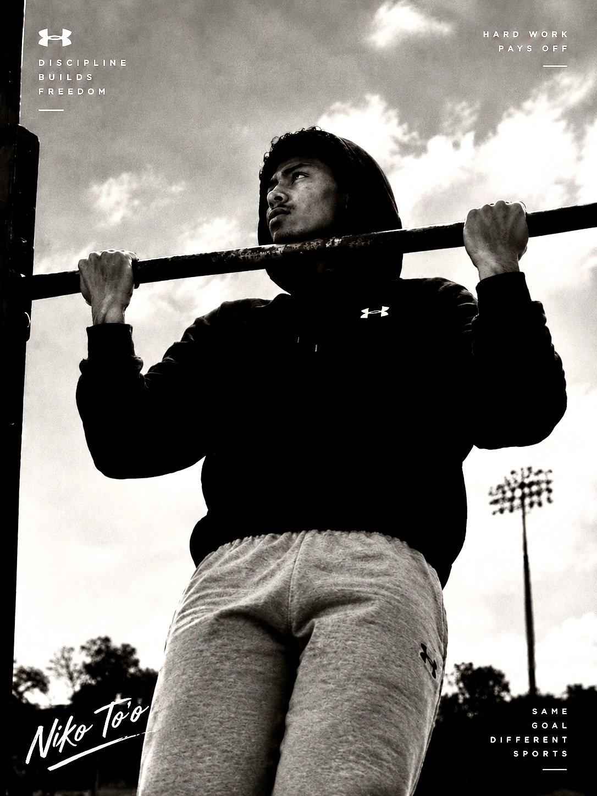

01
American Football
Speed, physicality, teamwork and execution.
Multi-sport athlete with a focus on American football, boxing, rugby and volleyball. This profile follows the training, development and journey behind the athlete.
My name is Falaniko Niko To'o. Sport is a major part of my life and gives me different ways to challenge myself and keep improving.
I am involved in American football, boxing, rugby and volleyball. Each sport develops different parts of my athletic ability, from movement and coordination to strength, timing and teamwork.
I am continuing to build my experience and develop as an athlete through training, competition and new opportunities.
Speed, physicality, teamwork and execution.
Timing, movement, discipline and composure.
Strength, awareness, teamwork and toughness.
Reaction, coordination, movement and explosiveness.
A school-style American football profile focused on the player rather than an NFL team or professional league. This section can showcase football development, training and future achievements.

Being involved in multiple sports means constantly learning and adapting. Training provides opportunities to improve different parts of my athletic ability.
The goal is simple: keep learning, keep training and keep developing.



Follow the training, development and moments that make up Niko To'o's multi-sport journey.
Back To Profile